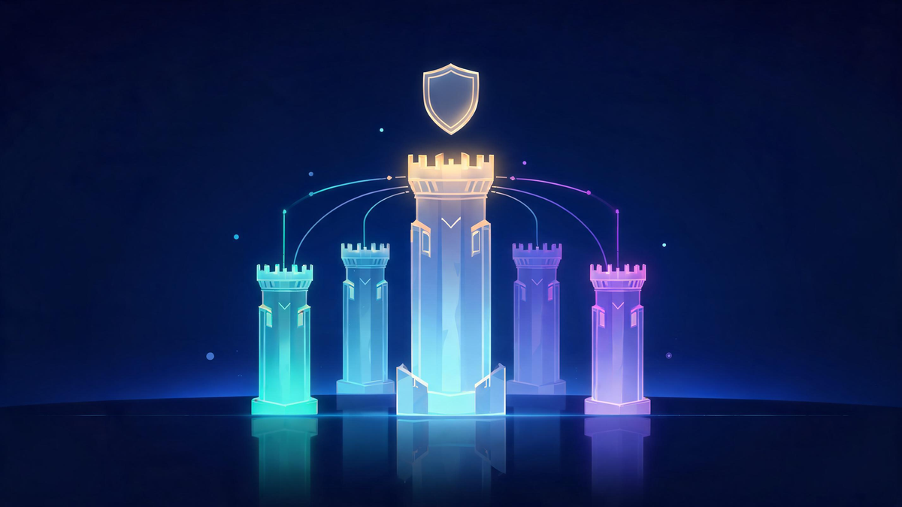
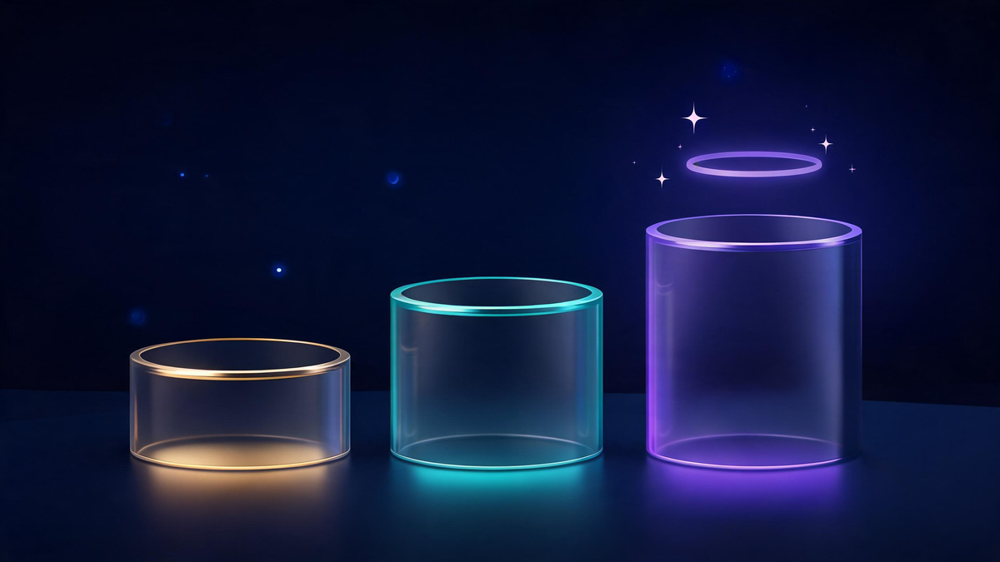

Top Cybersecurity Companies in 2026: Market Leaders Ranked

Quick answer
The top cybersecurity companies in 2026, ranked by market cap (October 2026): Palo Alto Networks ($342.6B — the largest pure-play, with $9.2 billion in fiscal 2025 revenue), CrowdStrike ($281.6B), Fortinet (~$127.7B) and Check Point ($14.01B) form the Big 4. Fastest growers: SentinelOne (+33%), CrowdStrike (+32%), Zscaler and Cloudflare (+30% each, Q2 2026). Global security spending hits $240 billion this year per Gartner.
In this guide
Key Takeaways
- Palo Alto Networks is the largest pure-play cybersecurity company — $342.6B market cap and $9.2B FY2025 revenue (SEC-filed).
- The Big 4 pure-plays: PANW, CrowdStrike ($281.6B), Fortinet (~$127.7B) and Check Point ($14.01B).
- Global information-security spending reaches $240 billion in 2026 (Gartner, +12.5% YoY).
- The 30% growth club: SentinelOne (+33%), CrowdStrike (+32%), Zscaler and Cloudflare (+30% each).
- 2026's defining shift: platformization — enterprises consolidating point tools into unified suites.
The cybersecurity industry has never been bigger: global spending hits $240 billion in 2026, and its leaders are ranked by market caps most software companies only dream about. Palo Alto Networks leads at $342.6 billion, CrowdStrike follows at $281.6 billion — and below them, a deep bench of specialists is growing at 30%+ per quarter. Here's the data-driven ranking, minus the vendor self-promotion.
Most "top cybersecurity companies" lists you'll find are published by the vendors themselves — which is why this one ranks by verifiable numbers: market capitalization, SEC-filed revenue, and quarterly growth. The industry is consolidating fast, and knowing who actually leads each category matters more than ever.
The Cybersecurity Market in 2026
The macro picture first. Gartner projects global end-user spending on information security at $240 billion in 2026 — a 12.5 percent increase year over year. Independent researchers peg the wider market even higher: Grand View Research values it at $271.9 billion in 2025 growing to $302.0 billion in 2026, while Fortune Business Insights forecasts the market expanding from $248.28 billion in 2026 to $699.39 billion by 2034 at a 13.8% CAGR.
Growth at this scale has three engines in 2026. First, agentic and AI-powered attacks are forcing every enterprise to upgrade defenses. Second, the World Economic Forum's Global Cybersecurity Outlook 2026 flags a widening readiness gap between AI adopters and everyone else. Third — and most visible in the stock market — platformization: enterprises are consolidating dozens of point products into a few strategic suites, rewarding the big platforms with record contract values.
Top Cybersecurity Companies Ranked by Market Cap
Market capitalization is the cleanest ranking — it reflects what public markets think the future is worth. As of October 2026, the pure-play hierarchy looks like this:

| Company | Market Cap (Oct 2026) | Known For |
|---|---|---|
| Palo Alto Networks | $342.6B | Network security platform, largest pure-play |
| CrowdStrike | $281.6B | Cloud-native endpoint & identity protection |
| Fortinet | ~$127.7B | Firewalls, Secure Access Service Edge |
| Check Point | $14.01B | Enterprise firewall pioneer |
Palo Alto Networks' $342.6 billion market cap makes it the largest pure-play cybersecurity company in the world — bigger than several of its top competitors combined. CrowdStrike, the cloud-native challenger turned co-leader, sits at $281.6 billion. Fortinet anchors the value tier at roughly $127.7 billion, while Check Point — the original firewall pioneer — trades at $14.01 billion, a reminder that scale in this market compounds brutally.
Revenue Leaders: Who Actually Sells the Most
Market cap measures expectations; revenue measures the business. On the filed numbers, Palo Alto Networks leads the pure-plays outright: $9.2 billion in fiscal 2025 revenue (ended July 2025), up 14.9% year over year, per its SEC 10-K — with free cash flow of $4.129 billion at a 37.6% margin.
The forward indicator is even more striking. In its September 2026 release, Palo Alto Networks guided Next-Generation Security ARR to $20.8–20.9 billion, representing 34–35% year-over-year growth — the clearest evidence yet that the platformization bet is paying. CrowdStrike's trajectory tells the same story from the endpoint side: it became the second-fastest software company ever to a $2 billion run-rate back in 2022 and has compounded from there.
The Big 4 Cybersecurity Companies
It's the most-searched question in the category, and the answer by pure-play scale is consistent: Palo Alto Networks, CrowdStrike, Fortinet and Check Point.
- Palo Alto Networks — the platform consolidator: network security, cloud (Prisma), and SOC (Cortex) in one suite.
- CrowdStrike — the endpoint-native disruptor that grew into identity, cloud and next-gen SIEM.
- Fortinet — the firewall workhorse with a massive installed base and SASE expansion.
- Check Point — the category pioneer, still the reference enterprise firewall for many markets.
The honest caveat: Microsoft's security division generates more revenue than any pure-play — but as one product line inside a $3-trillion-plus company, it doesn't appear on pure-play rankings. Depending on whether you count mega-vendors, the "Big 4" can reasonably become a Big 5.
Category Map: Who Leads Where
"Biggest" and "best fit" are different questions — the market segments into distinct battlefields, each with its own leaders:
| Segment | Leading Vendors |
|---|---|
| Network & Firewall | Palo Alto Networks, Fortinet, Check Point |
| Endpoint & EDR | CrowdStrike, SentinelOne, Microsoft Defender |
| Cloud & SSE | Zscaler, Cloudflare, Netskope |
| Identity | Okta, CyberArk |
| Email & Human Risk | Proofpoint, Mimecast |
| Mega-Platforms | Microsoft, Google, Cisco, IBM |
Two things stand out. The endpoint market (CrowdStrike vs SentinelOne vs Microsoft Defender) is where the fastest innovation cycles happen, while the network layer is the most consolidated — and the cloud-security district (Zscaler, Cloudflare, Netskope) is growing fastest as workloads move out of the datacenter. Most enterprises now buy two or three of these districts together, which is exactly why platform vendors keep acquiring.
Fastest-Growing Cybersecurity Companies
Scale is one ranking; momentum is another. In Q2 2026 reporting, four vendors cleared the 30% growth bar: SentinelOne (+33%), CrowdStrike (+32%), Zscaler (+30%) and Cloudflare (+30%) — the cloud-native cohort pulling away from the legacy pack.
Watch also the AI-native newcomer cohort — agentic-defense startups highlighted in the 2026 funding lists (Notable Capital's "Rising in Cyber" cohort among them) — attacking the same AI-security premium niche the giants are racing toward. None has public-market scale yet; several are growing like it.
How to Choose a Cybersecurity Vendor
Rankings help you shortlist; they don't pick your stack. Three practical filters cut through the marketing:
- Map your attack surface first. Cloud-heavy? Start in the SSE district. Hybrid enterprise? The network platforms. A vendor leading a segment you don't occupy is noise.
- Consolidate deliberately. Platformization cuts cost and alert fatigue — but only if the suite genuinely covers your gaps. Best-of-breed still wins in specialist segments where platform features are checkboxes, not products.
- Verify claims against independent data. Most ranked lists — including several on this SERP — are vendor-published. Cross-check analyst evaluations, MITRE evaluations and filed financials before committing a multi-year contract.
Frequently Asked Questions
What are the Big 4 companies in cybersecurity?
By pure-play scale, the Big 4 are Palo Alto Networks ($342.6B market cap), CrowdStrike ($281.6B), Fortinet (~$127.7B) and Check Point ($14.01B) as of October 2026. Microsoft also competes at massive scale through its security division, though it is not a pure-play vendor.
Who are the top 5 cybersecurity companies?
By market capitalization as of October 2026: Palo Alto Networks, CrowdStrike, Fortinet and Check Point lead the pure-plays, with Zscaler, Cloudflare and SentinelOne heading the next tier of cloud-native specialists. Microsoft's security business rivals any pure-play by revenue.
What are the top three trends in the cybersecurity industry in 2026?
The three defining 2026 trends are: agentic and AI-powered attacks automating offense, platformization as enterprises consolidate point tools into suites, and record security spending — Gartner projects $240 billion in 2026, up 12.5 percent year over year.
What is the role of AI in cybersecurity?
AI now cuts both ways: attackers use it to automate phishing, malware generation and reconnaissance, while defenders deploy AI-native platforms for threat detection and response. The World Economic Forum's 2026 outlook flags a widening readiness gap between AI adopters and the rest.
Which companies pay the most for cyber security?
If you mean salaries: information security analysts in the Information sector earn a median of $138,650 per year — the highest-paying industry for the role per BLS data. Tech and finance employers consistently outbid government and education for the same titles.
Keep Exploring
Keep exploring Veritya Daily's security coverage: ground the landscape with our guide to modern cyber security solutions, see what these market leaders pay their people in cybersecurity salaries in 2026, understand why intelligent automation is rewriting security operations, and check how quantum computing threatens today's encryption in our IBM Quantum pricing breakdown.
📚 Sources & Citations (10)
- Macrotrends — Check Point / Palo Alto Networks / CrowdStrike Market Cap History (October 12, 2026 data)
- Palo Alto Networks Investor Relations — Fiscal Q4 & FY2025 Results (August 2025); FY2026 Q4 Release with Next-Gen Security ARR Guidance (September 2026)
- SEC EDGAR — Palo Alto Networks Form 10-K, FY2025 (panw-20250731)
- The Software Analyst — Cybersecurity $10B Giants: Market Share & Growth Insights (2026)
- Fortinet — Cybersecurity Trends 2026 (citing Gartner $240B spending forecast)
- Fortune Business Insights — Cybersecurity Market Report 2026–2034 (September 2026)
- Grand View Research — Cybersecurity Market Size & Share Report 2026–2033
- World Economic Forum — Global Cybersecurity Outlook 2026 (January 2026)
- TIKR — CrowdStrike vs. Palo Alto Networks: Valuation Analysis (May 2026)
- U.S. Bureau of Labor Statistics — Information Security Analysts, Occupational Outlook Handbook (May 2025 wage data)